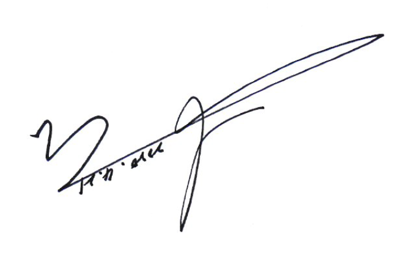

세컨그라운드 홈페이지에 방문하신 것을 환영합니다.
포스트코로나 시대에 발맞추어 무관중공연, 라이브커머스, 실시간 스포츠방송, 행사촬영 개인방송의 온라인방송이 자리할 수 있는 곳에 세컨그라운드가 함께합니다.

포스트코로나 시대에 발맞추어 무관중공연, 라이브커머스, 실시간 스포츠방송, 행사촬영 개인방송의 온라인방송이 자리할 수 있는 곳에 세컨그라운드가 함께합니다.
안녕하십니까. ㈜세컨그라운드 대표 박대규입니다.
홈페이지를 찾아주신 여러분 진심으로 환영합니다.
스포츠 기록영상 전문 기업 (주)세컨그라운드는 스포츠 기록정보시스템과 영상기록을 제공하는 회사입니다.
두 번째(Second)
*장(Ground : *운동장, 마당)이라는 이름에서 알 수 있듯이
프로무대가 아닌 생활체육 동호인들이 보다 전문적으로 스포츠를
즐기고자하는 니즈를 충족시켜주고자 시작되었습니다.
“Play like A Pro” 라는 회사 모토는 프로와 같이 즐기고 싶은 분들을 위해 기록정보맞춤형 플랫폼을 개발하게 되었습니다. 더 나아가 국내 스포츠 생활체육에 개인의 역량과 팀 경기력 향상을 넘어 공정하고 객관적인 스포츠 인프라를 구축하는 것을 목표로 하고 있으며 이를 통하여 언제 어디서나 프로와 같은 스포츠 기록영상 서비스를 제공하고 있습니다.
2016년 설립한 세컨그라운드는 2017년도 주식회사 세컨그라운드로 새롭게 문을 열고
그 해 2017년도부터 2020년까지 4년 연속 Las Vegas에서 열린 CES, 2018년과 2019년 바르셀로나에서 열린 MWC를 참가했습니다. 이렇게 다양한 활동으로
세컨그라운드의 시스템이
국내 뿐 아니라 세계에서도 주목 받았습니다.
코로나로 인해 스포츠 시장이 비대면 시장으로 변화되고 있으며 세컨그라운드에서 개발한 시스템 테코드는 1인 방송국이 가능한 시스템으로 소프트웨어 기반의 기술을 통한 다양한 PC에서 상용이 가능하며 고가의 라이브 방송을 원가 절감 및 인력절감으로 운영이 가능합니다.
2020년 경기도 야구 소프트볼 협회와 MOU계약, 독립야구단 경기도리그 중계권 입찰에서 낙찰되었으며 세컨그라운드의 시스템을 선보이게 되었으며 현재 독립야구단 경기도리그 유튜브 스트리밍 독점중계로 테코드 시스템을 통해 운영되고 있습니다. 또한 현재 야구뿐 아니라 E-SPORT, 교육, 소셜, 광고, 공연분야로의 수익모델을 창출을 위해 다양한 서비스를 준비중에 있습니다.
우리의 삶과 문화에도 스며들고 있는 세컨그라운드 테코드.
무관중 공연, 라이브커머스,
행사촬영, 개인방송과 같은
온라인 방송이 자리할 수 있는 곳에는 세컨그라운드가 함께하여 포스트코로나 시대를 열어가겠습니다.
감사합니다.
 세컨그라운드 대표 | 박대규